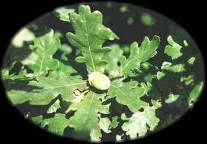
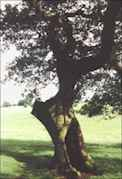

Duir
Oak (June 10 - July 7)

Oak - The oak of myth and legend is the common oak (Quercus robur L.). It is sometimes called the great oak, which is a

translation of its Latin name (robur is the root of the English word "robust"). It grows with ash and beech in the lowland forests, and can reach a height of 150 feet and age of 800 years. Along with ashes, oaks were heavily logged throughout recent millennia, so that the remaining giant oaks in many parts of Europe are but a remnant of forests past. Like most other central and northern European trees, common oaks are deciduous, losing their leaves before Samhain and growing new leaves in the spring so that the trees are fully clothed by Bealltaine. Common oaks are occasionally cultivated in North America, as are the similar native white oak, valley oak, and Oregon oak. Oaks are members of the Beech family (Fagaceae). Curtis Clark